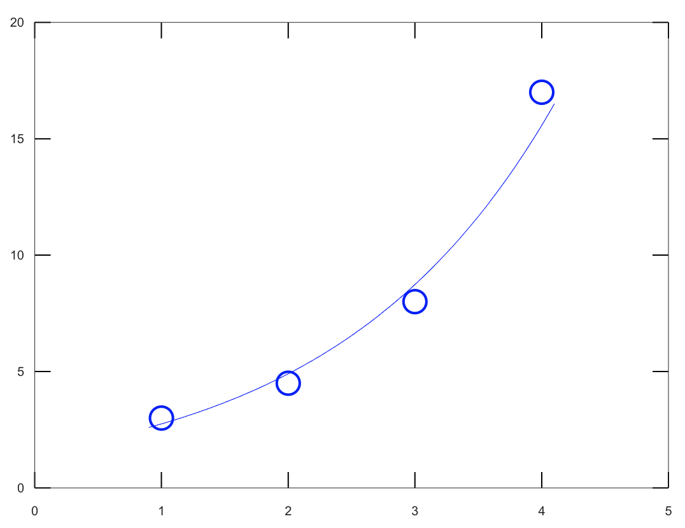

Find the least-squares fit the data points in Problem 1 by a straight line --
that is, by a linear function $y=r_0+r_1x$.
| $a_i$ = weight in ouces |
2.0 |
4.0 |
5.0 |
6.0 |
| $b_i$ = Length in inches |
6.5 |
8.5 |
11.0 |
12.5 |
輸入
A = [1 2;1 4; 1 5;1 6]
a = [2; 4; 5; 6]
b = [6.5; 8.5; 11.0; 12.5]
r = inv( A' * A ) * A' * b
plot(a, b, "bo")
hold on
x = [ a(1) - 0.1 : 0.01 : a( length(a) ) + 0.1 ];
y = r(1) + r(2) * x;
plot(x, y, "b")
hold off
輸出結果
A =
1 2
1 4
1 5
1 6
a =
2
4
5
6
b =
6.5000
8.5000
11.0000
12.5000
r =
3.1286
1.5286
並還有圖
Use the method of least-squares to fit the data points in Problem 3 by an exponentialfunction $y=f(x)=re^{sx}$.
| $a_i$ = Weight in tons |
1.0 |
2.0 |
3.0 |
4.0 |
| $b_i$ = Price in units of \$ 10000 |
3 |
4.5 |
8 |
17 |
輸入
A = [1 1;1 2; 1 3;1 4]
a = [1; 2; 3; 4]
b = [3; 4.5; 8; 17]
b1 = log( b )
r = inv( A' * A ) * A' * b1
plot(a, b, "bo")
hold on
x = [ a(1) - 0.1 : 0.01 : a( length(a) ) + 0.1 ];
y = exp( r(1) ) * exp( r(2) * x );
plot(x, y, "b")
hold off
輸出結果
A =
1 1
1 2
1 3
1 4
a =
1
2
3
4
b =
3.0000
4.5000
8.0000
17.0000
b1 =
1.0986
1.5041
2.0794
2.8332
r =
0.4340
0.5779
並還有圖

Use a computer to find the least-squares fit the data points in Problem 2 by a parabola --
that is, by a quadratic function $y=r_0+r_1x+r_2x^2$.
| $a_i$ = (Year observed) - 1990 |
2.0 |
4.0 |
5.0 |
8.0 |
| $b_i$ = Number of rabbits in units of 1000 |
1 |
3 |
5 |
12 |
輸入
a = [2; 4; 5; 8]
b = [1; 3; 5; 12]
A = [ones(4,1), a, a.^2]
r = inv( A' * A ) * A' * b
plot(a, b, "bo")
hold on
x = [ a(1) - 0.1 : 0.01 : a( length(a) ) + 0.1 ];
y = r(1) + r(2) * x + r(3) * x .^ 2;
plot(x, y, "b")
hold off
輸出結果
a =
2
4
5
8
b =
1
3
5
12
A =
1 2 4
1 4 16
1 5 25
1 8 64
r =
2.0667e-01
1.0000e-02
1.8333e-01
並還有圖